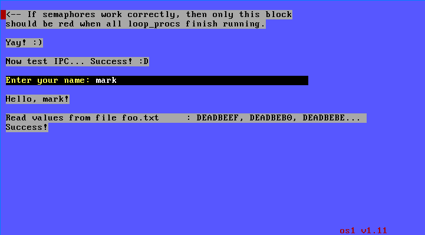

os1 is a simple 32-bit x86 operating system written from scratch in Rust.
I had originally intended not to have any library code in my kernel at all, but
this is not possible with Rust. As a result I am linking in libcore and
liballoc which contain the heart of Rust functionality. Special thanks to
Krzysztof for helping me get that set up!
The source is available on Github, along with instructions for building and running from source.
A disk image is available for those that want to just run the OS in QEMU (
Download the disk image). To boot, run this command.
You can replace os1.img with the actual path to the .img file:
qemu-system-x86_64 --serial mon:stdio -drive format=raw,file=os1.img,index=2,media=disk
A screenshot of the what you should see after the OS runs for a second or so is below.
Features so far:
TODO:
Screenshot
